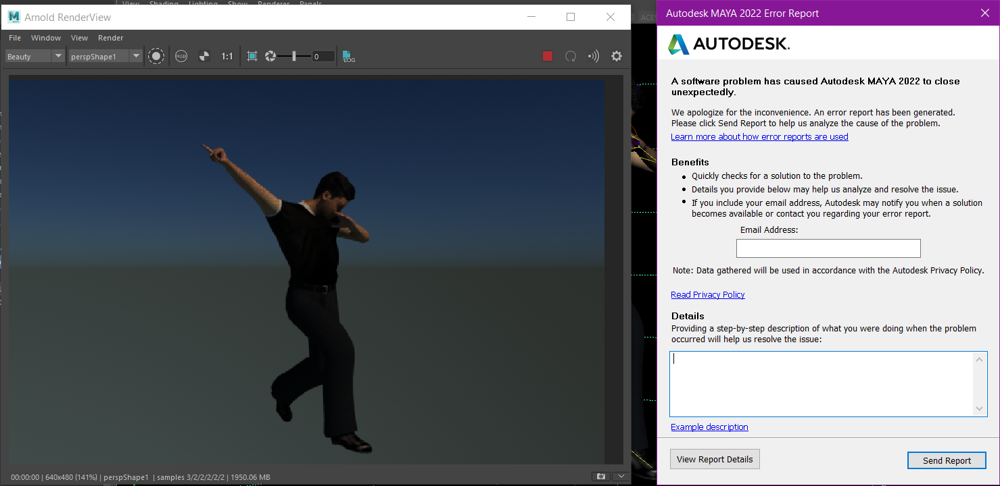

Assignment 01
This is Mavanan Sahshaha. I decided to make the pose a dab because in my opinion, despite the "meme" status of this pose, I think it carries a lot of subtext. You see, Mavanan, from this pose, you can tell is feeling happy and upbeat. I also like this pose because it requires me to move every limb in order to fully express how awesome it is. So it was good practice for using the Maya tools.
As for the Autodesk Character Generator, I think it's really good for making rough background characters to quickly fill a scene. In my opinion, it is not robust enough and does not offer enough options to truly be a real character creator from which you could make unique characters. Theoretically, at least to me, the best character creators have the ability to create any character in existence. Even animated ones! However, as for quickly making characters that are different enough from each other, this is top class.
First Article:
I think this article has the right idea, but the wrong opinion. I agree that virtual avatars and the worlds themselves do change the personalities and stuff of us, but in a good way. Usually, the avatars in game are free of consequence, and being able to do and say things without worrying about the effects does change how we act in real life-it makes us more aware of our actual actions.
Second Article:
This article was really interesting, and made me think of some point that I have already thought about in the past. Not only in video games, but in book and movies as well, people tend to put themseleves in place of the main character. Sometimes thinking, "this is what I would do," or even more dramatically, reading CYOA books so they actually *can* make those decisions. The same goes for games, if you're going to be putting yourself in place of the main character, why not make the main character a reflection of yourself, but enhanced with your best traits? Or in a more fantasy or sci fi setting, something that you wish you could be?